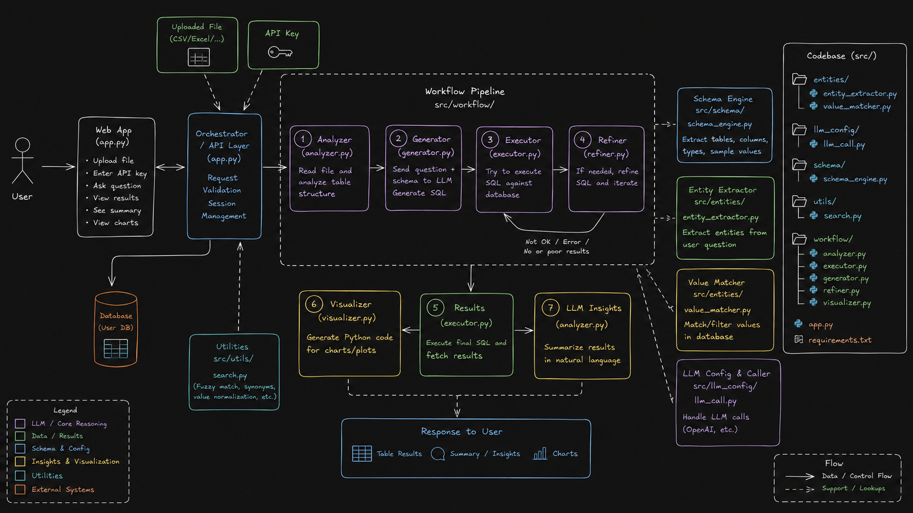
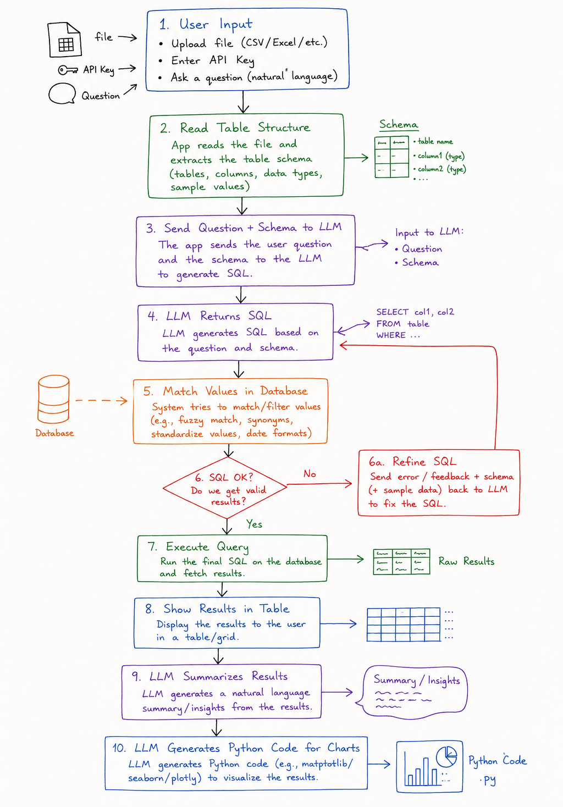

NL2SQL Workflow System is an LLM-assisted data analysis app that turns plain-English questions into SQL for SQLite, CSV, and Excel data sources. It validates schemas, generates and refines SQL, executes read-only queries safely, explains the results, and can produce chart code when visual output is useful.
Non-technical users often want answers from structured data without learning SQL, understanding schema details, or manually writing queries. At the same time, naïve text-to-SQL tools can generate invalid, unsafe, or misleading queries when values and column names do not exactly match the dataset.
This project addresses that gap by combining schema extraction, LLM generation, value matching, SQL refinement, safe execution, and result explanation in one workflow.
I built a Streamlit application that guides the user from question to answer through a staged workflow. The app reads the uploaded file, builds schema context, asks the LLM for SQL, improves the query using fuzzy value matching, runs the final statement safely, and then summarizes the output in plain language.
The system is organized as a pipeline so each step has a clear responsibility. That separation makes the workflow easier to debug, extend, and explain.

The core logic is split into focused modules under the engine folder. Each module handles one stage of the workflow, which keeps the codebase easier to maintain and easier to test.
The executor is designed for read-only analysis so the app does not modify the source data. The workflow also tries to correct mismatched literals before execution, which makes the final SQL more robust against imperfect LLM output.
Data flows from the uploaded source into schema extraction, then into prompt building for the LLM, then through query refinement and execution, and finally into the result table, natural-language summary, and optional chart output.

LLMs often produce valid-looking SQL with incorrect literal values or slightly wrong column references.
Solution: Added entity extraction and fuzzy matching so the workflow can map user intent to the nearest values in the dataset before execution.
Generated queries must not modify the source data or access unsupported operations.
Solution: Restricted execution to read-only analysis queries and organized the app so each stage can be inspected before the final query runs.